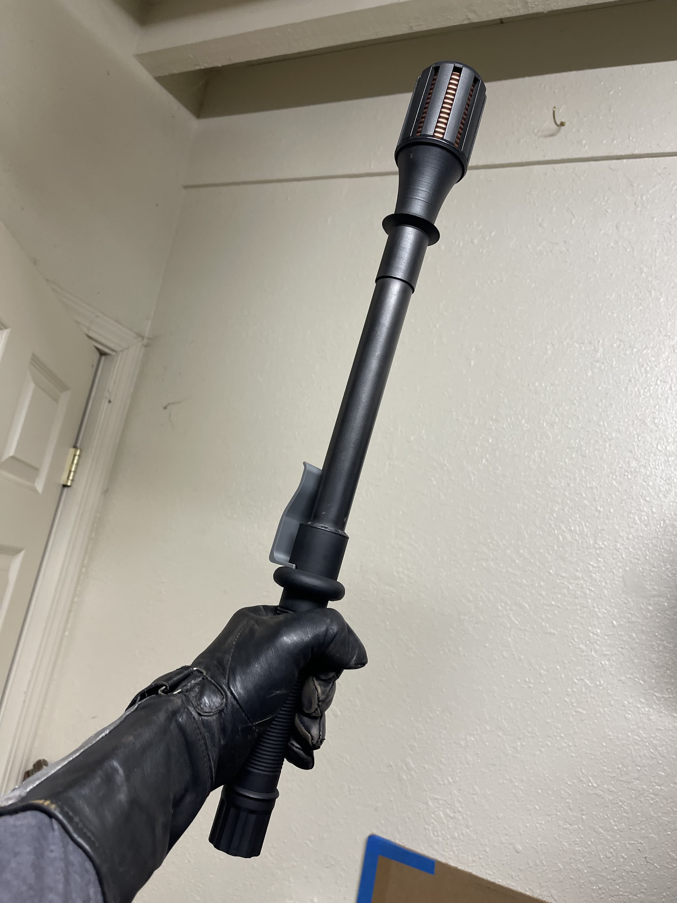
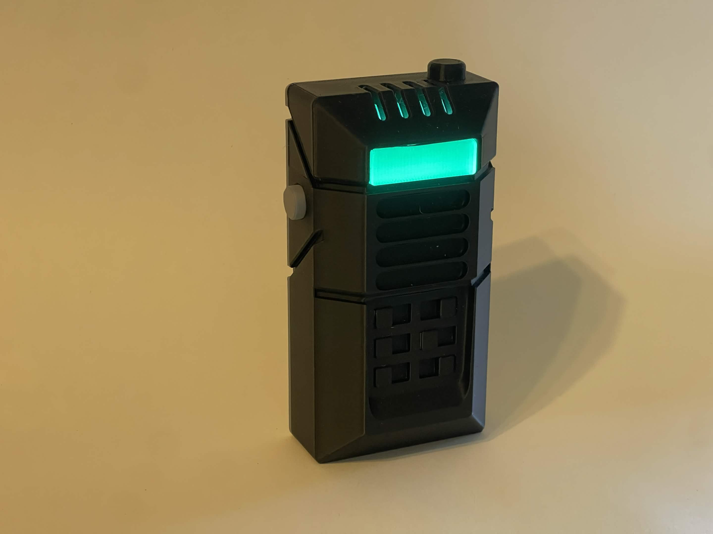

CSC–001
Stunstick
AvailableA full-scale display prop with a crisp industrial silhouette, layered printed construction, and a finish developed to look at home in the world that inspired it.
View on EtsyCalifornia / Small-batch fabrication
Purpose-built props and display pieces made with close attention to silhouette, finish, and the details that make an object feel convincing.

01 / Current inventory
Two familiar field objects, translated from digital reference into durable physical pieces.
A full-scale display prop with a crisp industrial silhouette, layered printed construction, and a finish developed to look at home in the world that inspired it.
View on Etsy
CSC–002A wearable, illuminated accessory designed around practical battery access, clean mounting, and the unmistakable geometry of Civil Protection equipment.
View on Etsy02 / Made with intent
Designed from reference.
Built to hold up in reality.
Citadel Supply Co. makes small-batch props for collectors, costumers, and people who care about the details. Every piece starts with close observation, moves through practical CAD and prototyping, and finishes by hand in California.
03 / Workshop standards
Not anonymous inventory. Not mass-market replicas. These are workshop-made objects developed, printed, assembled, and finished in California.
Proportion, silhouette, and surface detail are studied before fabrication begins.
Limited production allows each piece to receive hands-on assembly and inspection.
Questions reach the person who designed and built the object—not a fulfillment center.
Supply channel / Etsy
Limited inquiries
Custom work is considered selectively as the shop grows. Send a concise project outline, timeline, and reference images by email.
Email the workshop